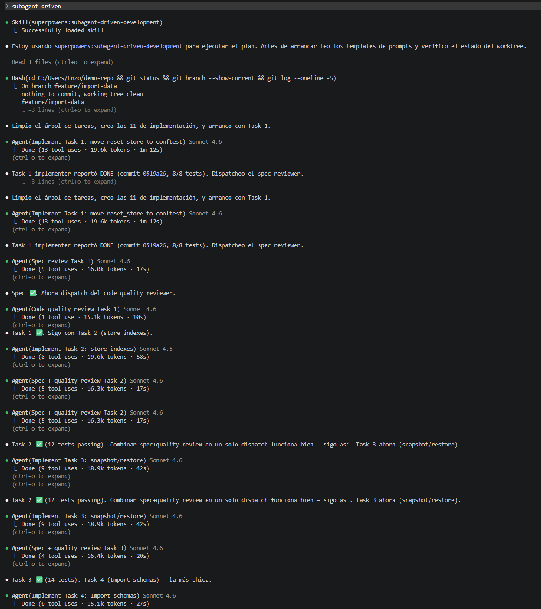
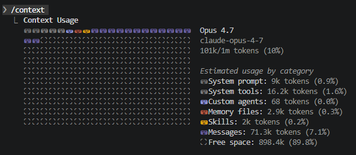
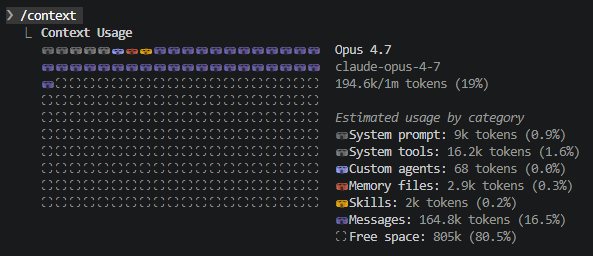

<style>
  /* §9 — subagent-driven-development */

  /* Diagrama coordinador → subagents (§9.2) */
  .s9-arch {
    max-width: 1000px;
    margin: var(--spacing-md) auto 0 auto;
  }
  .s9-coord {
    background: var(--bg-secondary);
    border: 2px solid var(--accent);
    border-radius: 8px;
    padding: var(--spacing-sm) var(--spacing-md);
    max-width: 320px;
    margin: 0 auto;
    text-align: center;
  }
  .s9-coord-tag {
    font-family: var(--font-mono);
    font-size: 0.78rem;
    letter-spacing: 0.12em;
    text-transform: uppercase;
    color: var(--accent);
    margin: 0 0 4px 0;
  }
  .s9-coord-body {
    color: var(--text-primary);
    font-size: 1.05rem;
    line-height: 1.4;
    margin: 0;
  }
  .s9-arch-arrows {
    text-align: center;
    color: var(--accent);
    font-size: 1.6rem;
    margin: 4px 0;
    line-height: 1;
  }
  .s9-subs {
    display: grid;
    grid-template-columns: repeat(3, 1fr);
    gap: var(--spacing-sm);
    margin-top: var(--spacing-xs);
  }
  .s9-sub {
    background: var(--bg-primary);
    border: 1px dashed var(--accent-secondary);
    border-radius: 6px;
    padding: var(--spacing-xs) var(--spacing-sm);
    text-align: center;
  }
  .s9-sub-tag {
    font-family: var(--font-mono);
    font-size: 0.7rem;
    letter-spacing: 0.12em;
    text-transform: uppercase;
    color: var(--accent-secondary);
    margin: 0 0 4px 0;
  }
  .s9-sub-name {
    color: var(--text-primary);
    font-size: 0.95rem;
    line-height: 1.35;
    margin: 0 0 4px 0;
  }
  .s9-sub-ctx {
    font-family: var(--font-mono);
    font-size: 0.7rem;
    color: var(--text-muted);
    margin: 0;
    font-style: italic;
  }
  .s9-arch-note {
    display: block;
    text-align: center !important;
    color: var(--text-muted);
    font-size: 1rem;
    line-height: 1.5;
    max-width: 1000px;
    margin-left: auto !important;
    margin-right: auto !important;
    margin-top: var(--spacing-md);
    margin-bottom: 0;
    font-style: italic;
  }
  .s9-arch-note + .s9-arch-note {
    margin-top: 4px;
  }

  /* Two-stage review (§9.4) */
  .s9-review {
    display: grid;
    grid-template-columns: 1fr auto 1fr;
    gap: var(--spacing-sm);
    align-items: stretch;
    max-width: 1050px;
    margin: var(--spacing-md) auto 0 auto;
  }
  .s9-stage {
    background: var(--bg-secondary);
    border-top: 4px solid var(--accent);
    border-radius: 8px;
    padding: var(--spacing-sm) var(--spacing-md);
  }
  .s9-stage.is-second {
    border-top-color: var(--accent-secondary);
  }
  .s9-stage-num {
    display: inline-block;
    font-family: var(--font-mono);
    font-size: 1rem;
    font-weight: 700;
    color: var(--accent);
    background: rgba(100, 255, 218, 0.1);
    padding: 2px 10px;
    border-radius: 4px;
    margin-right: 6px;
  }
  .s9-stage.is-second .s9-stage-num {
    color: var(--accent-secondary);
    background: rgba(130, 170, 255, 0.1);
  }
  .s9-stage-name {
    color: var(--text-primary);
    font-family: var(--font-mono);
    font-size: 1.05rem;
    font-weight: 700;
  }
  .s9-stage-q {
    color: var(--accent);
    font-size: 1.1rem;
    font-weight: 600;
    margin: var(--spacing-xs) 0 4px 0;
    line-height: 1.4;
  }
  .s9-stage.is-second .s9-stage-q {
    color: var(--accent-secondary);
  }
  .s9-stage-body {
    color: var(--text-primary);
    font-size: 0.98rem;
    line-height: 1.5;
    margin: 0;
  }
  .s9-review-arrow {
    align-self: center;
    color: var(--text-muted);
    font-size: 1.8rem;
    font-weight: 700;
  }
  .s9-review-order {
    text-align: center;
    color: var(--text-muted);
    font-size: 1.05rem;
    margin: var(--spacing-md) auto 0 auto;
    max-width: 880px;
    line-height: 1.5;
    font-style: italic;
  }
  .s9-review-order strong {
    color: var(--accent);
    font-style: normal;
  }

  /* Capturas (§9.6 y §9.7) */
  .s9-cap-frame {
    max-width: 1100px;
    margin: var(--spacing-md) auto 0 auto;
    text-align: center;
  }
  .s9-cap-img {
    max-width: 100%;
    max-height: 540px;
    border-radius: 6px;
    border: 1px solid var(--text-muted);
  }
  .s9-cap-caption {
    color: var(--text-muted);
    font-size: 1.05rem;
    margin: var(--spacing-sm) auto 0 auto;
    max-width: 880px;
    line-height: 1.5;
    font-style: italic;
  }
  .s9-cap-caption strong {
    color: var(--accent);
    font-style: normal;
  }

  /* Context comparison (§9.7) */
  .s9-ctx {
    display: grid;
    grid-template-columns: 1fr 1fr;
    gap: var(--spacing-md);
    max-width: 1100px;
    margin: var(--spacing-md) auto 0 auto;
    align-items: end;
  }
  .s9-ctx-side {
    text-align: center;
  }
  .s9-ctx-tag {
    display: block;
    font-family: var(--font-mono);
    font-size: 0.85rem;
    letter-spacing: 0.12em;
    text-transform: uppercase;
    color: var(--text-muted);
    margin: 0 0 var(--spacing-xs) 0;
  }
  .s9-ctx-tag.is-after {
    color: var(--accent);
  }
  .s9-ctx-img {
    max-width: 100%;
    max-height: 280px;
    border-radius: 6px;
    border: 1px solid var(--text-muted);
  }
  .s9-ctx-num {
    color: var(--text-primary);
    font-family: var(--font-mono);
    font-size: 1.4rem;
    font-weight: 700;
    margin: var(--spacing-xs) 0 0 0;
  }
  .s9-ctx-side.is-after .s9-ctx-num {
    color: var(--accent);
  }
  .s9-ctx-delta {
    text-align: center;
    color: var(--text-primary);
    font-size: 1.15rem;
    margin: var(--spacing-md) auto 0 auto;
    max-width: 940px;
    line-height: 1.5;
  }
  .s9-ctx-delta strong {
    color: var(--accent);
    font-family: var(--font-mono);
  }
</style>

<!-- §9.1 — Opener: mini-roadmap iluminado en s9 -->
<section>
  <div class="pipe-grid s5-happy-path is-mini highlight-s9">
    <div class="pipe-node" data-group="s6"><div class="pipe-icon">1</div><div class="pipe-label">brainstorming</div></div>
    <div class="pipe-arrow"><svg width="20" height="12" viewBox="0 0 24 14"><path d="M2 7h16m0 0l-5-5m5 5l-5 5" stroke="var(--accent)" stroke-width="2" fill="none" stroke-linecap="round"/></svg></div>
    <div class="pipe-node" data-group="s7"><div class="pipe-icon">2</div><div class="pipe-label">writing-plans</div></div>
    <div class="pipe-arrow"><svg width="20" height="12" viewBox="0 0 24 14"><path d="M2 7h16m0 0l-5-5m5 5l-5 5" stroke="var(--accent)" stroke-width="2" fill="none" stroke-linecap="round"/></svg></div>
    <div class="pipe-node" data-group="s8"><div class="pipe-icon">git</div><div class="pipe-label">GitHub Flow</div></div>
    <div class="pipe-arrow"><svg width="20" height="12" viewBox="0 0 24 14"><path d="M2 7h16m0 0l-5-5m5 5l-5 5" stroke="var(--accent)" stroke-width="2" fill="none" stroke-linecap="round"/></svg></div>
    <div class="pipe-node" data-group="s9"><div class="pipe-icon">3</div><div class="pipe-label">subagent-driven-development</div></div>
    <div></div><div></div><div></div><div></div><div></div><div></div>
    <div class="pipe-arrow" style="transform: rotate(90deg);"><svg width="20" height="12" viewBox="0 0 24 14"><path d="M2 7h16m0 0l-5-5m5 5l-5 5" stroke="var(--accent)" stroke-width="2" fill="none" stroke-linecap="round"/></svg></div>
    <div class="pipe-node" data-group="s13"><div class="pipe-icon">7</div><div class="pipe-label">finishing-a-development-branch</div></div>
    <div class="pipe-arrow"><svg width="20" height="12" viewBox="0 0 24 14"><path d="M22 7H6m0 0l5-5M6 7l5 5" stroke="var(--accent)" stroke-width="2" fill="none" stroke-linecap="round"/></svg></div>
    <div class="pipe-node" data-group="s12"><div class="pipe-icon">6</div><div class="pipe-label">verification-before-completion</div></div>
    <div class="pipe-arrow"><svg width="20" height="12" viewBox="0 0 24 14"><path d="M22 7H6m0 0l5-5M6 7l5 5" stroke="var(--accent)" stroke-width="2" fill="none" stroke-linecap="round"/></svg></div>
    <div class="pipe-node" data-group="s11"><div class="pipe-icon">5</div><div class="pipe-label">requesting-code-review</div></div>
    <div class="pipe-arrow"><svg width="20" height="12" viewBox="0 0 24 14"><path d="M22 7H6m0 0l5-5M6 7l5 5" stroke="var(--accent)" stroke-width="2" fill="none" stroke-linecap="round"/></svg></div>
    <div class="pipe-node" data-group="s10"><div class="pipe-icon">4</div><div class="pipe-label">test-driven-development</div></div>
  </div>

  <div class="s-skill-opener">
    <h2 class="s-skill-opener-name">subagent-driven-development</h2>
    <p class="s-skill-opener-tag">Ejecuta el plan despachando un subagent fresco por tarea.</p>
  </div>

  <aside class="notes">
    <u>Opener de §9. Tercera skill del happy-path; pieza s9 iluminada en el roadmap.</u>
    <em>"Tercera skill: subagent-driven-development. Acá entramos al corazón del autonomous coding. La idea es ejecutar el plan despachando un subagent fresco por cada tarea, con un review automático entre tarea y tarea. Vamos a ver por qué eso cambia todo."</em>
  </aside>
</section>

<!-- §9.2 — Qué hace: diagrama coordinador + subagents -->
<section>
  <h2 style="text-align: center; max-width: 900px; margin: 0 auto;">Qué hace</h2>

  <div class="s9-arch">
    <div class="s9-coord">
      <p class="s9-coord-tag">Coordinador</p>
      <p class="s9-coord-body">Mantiene visión global: plan + spec + estado del repo. Despacha subagents y revisa lo que devuelven.</p>
    </div>

    <div class="s9-arch-arrows">↓ &nbsp; ↓ &nbsp; ↓</div>

    <div class="s9-subs">
      <div class="s9-sub">
        <p class="s9-sub-tag">Subagent · Task 1</p>
        <p class="s9-sub-name">Mover <code>reset_store</code> a <code>conftest.py</code></p>
        <p class="s9-sub-ctx">contexto fresco · 19.6k tokens · 1m 12s</p>
      </div>
      <div class="s9-sub">
        <p class="s9-sub-tag">Subagent · Task 2</p>
        <p class="s9-sub-name">Índices del store + <code>find_*</code></p>
        <p class="s9-sub-ctx">contexto fresco · 19.6k tokens · 58s</p>
      </div>
      <div class="s9-sub">
        <p class="s9-sub-tag">Subagent · Task 3</p>
        <p class="s9-sub-name"><code>snapshot()</code> / <code>restore()</code></p>
        <p class="s9-sub-ctx">contexto fresco · 18.9k tokens · 42s</p>
      </div>
    </div>
  </div>

  <p class="s9-arch-note">Cada subagent arranca con <strong style="color: var(--accent); font-style: normal;">contexto limpio</strong> — no hereda la sesión del coordinador ni arrastra decisiones tácitas de tareas anteriores.</p>
  <p class="s9-arch-note">Implementa, testea, commitea y devuelve un resumen.</p>

  <aside class="notes">
    <u>Diagrama central de §9. El coordinador delega tarea por tarea a subagents efímeros con contexto aislado. Los números de tokens son los reales del log.</u>
    <em>"La estructura del flujo es así. Hay un coordinador — el agente principal — que mantiene la visión global: plan, spec, estado del repo. Y para cada tarea del plan, el coordinador despacha un subagent fresco."</em>
    <em>"Fresco quiere decir literal: contexto limpio, sin la conversación del coordinador, sin decisiones tácitas de tareas anteriores. El subagent recibe el texto completo de su tarea más el contexto que necesita, implementa, testea, commitea y devuelve un resumen al coordinador."</em>
    <em>"Los números acá abajo son del log real: la Task 1 usó 19.6k tokens y tardó un minuto doce. La Task 2, 19.6k. La Task 3, 18.9k. Cada una en un contexto efímero que se descarta cuando termina. Por eso escala — el contexto del coordinador no se llena, lo vemos al final de la sección."</em>
  </aside>
</section>

<!-- §9.3 — Cuándo + Por qué importa (combinado con reveals) -->
<section>
  <h2 style="text-align: center; max-width: 900px; margin: 0 auto;">Cuándo se activa y por qué importa</h2>

  <div class="fragment fade-in" data-fragment-index="0">
    <p class="s6-sublabel" style="margin-top: var(--spacing-md);">Cuándo se activa</p>
    <div class="s6-compare">
      <div class="s6-compare-card is-yes">
        <div class="s6-compare-tag">subagent-driven (autónomo)</div>
        <p class="s6-compare-body">Con un plan aprobado, cuando querés delegar una hora entera y volver. Corre continuo entre checkpoints — no te pide permiso entre tareas.</p>
      </div>
      <div class="s6-compare-card is-no">
        <div class="s6-compare-tag">executing-plans (conservador)</div>
        <p class="s6-compare-body">Alternativa: batchea las tareas en una sesión paralela con checkpoints humanos por tarea. Más conservadora — para ver cada step antes de seguir.</p>
      </div>
    </div>
  </div>

  <div class="fragment fade-in" data-fragment-index="1">
    <p class="s6-sublabel">Por qué importa</p>
    <div class="s6-central" style="margin-top: 0;">
      <div class="s6-central-main">
        Cada subagent arranca limpio, así no acumula <strong>context rot</strong> ni decisiones tácitas que se le filtraron en la Task 1 y le ensucian la Task 4.
      </div>
      <p class="s6-central-sub">
        El coordinador es el único que mantiene la visión global. El subagent no improvisa: lee plan y spec como contratos cerrados.
      </p>
    </div>
  </div>

  <aside class="notes">
    <strong>Dos reveals — cuándo + por qué.</strong>
    <u>Cuándo se activa esta skill vs su alternativa más conservadora, y la razón por la que el reset de contexto importa.</u>
    <em>"Cuándo se activa: con un plan aprobado en disco. Hay dos opciones para ejecutarlo. Esta skill, subagent-driven-development, es la autónoma: corre continuo entre checkpoints, sin pedirte permiso entre tareas. Si querés delegar una hora entera y volver a ver el resultado, esta es la skill. La alternativa, executing-plans, es más conservadora: batchea las tareas en una sesión paralela con checkpoints humanos por tarea. Más lenta pero te deja revisar a mano antes de seguir."</em>
    <em>"Por qué importa: cada subagent arranca limpio, así no acumula context rot ni decisiones tácitas que se le filtraron en la Task 1 y le ensucian la Task 4. El coordinador es el único que mantiene la visión global — mira el plan, el spec y el estado del repo, y reparte tareas con foco quirúrgico. Y acá se cierra el callback a spec-driven development: el subagent no improvisa, lee plan y spec como contratos cerrados."</em>
  </aside>
</section>

<!-- §9.4 — Punto crítico: two-stage review -->
<section>
  <h2 style="text-align: center; max-width: 900px; margin: 0 auto;">Punto crítico: two-stage review</h2>

  <div class="s9-review">
    <div class="s9-stage">
      <span class="s9-stage-num">1</span><span class="s9-stage-name">Spec compliance</span>
      <p class="s9-stage-q">¿El código que produjo el subagent cumple lo que el plan pedía?</p>
      <p class="s9-stage-body">El reviewer compara el diff contra el texto de la tarea. ¿Implementó todo? ¿Agregó cosas que no estaban pedidas? Sin entrar a juzgar estilo.</p>
    </div>
    <div class="s9-review-arrow">→</div>
    <div class="s9-stage is-second">
      <span class="s9-stage-num">2</span><span class="s9-stage-name">Code quality</span>
      <p class="s9-stage-q">¿El código es razonable?</p>
      <p class="s9-stage-body">Sin dead code, sin shortcuts, sin sobre-engineering. Recién acá se mira calidad de implementación.</p>
    </div>
  </div>

  <p class="s9-review-order">
    El orden importa: <strong>primero el qué, después el cómo.</strong> Si el código es lindo pero no hace lo que el plan pedía, hay que arreglar el qué antes que el cómo.
  </p>

  <aside class="notes">
    <u>Slide central de §9: la regla del two-stage review entre tareas.</u>
    <em>"Después de que el subagent reporta tarea completa, el coordinador no pasa directamente a la siguiente. Corre un two-stage review antes."</em>
    <em>"Etapa uno: spec compliance review. ¿El código que produjo el subagent cumple lo que el plan pedía? ¿Implementó todo? ¿Agregó cosas que no estaban pedidas? El reviewer compara el diff contra el texto de la tarea, sin entrar a juzgar estilo."</em>
    <em>"Etapa dos: code quality review. ¿El código es razonable? Sin dead code, sin shortcuts, sin sobre-engineering. Recién acá se mira calidad."</em>
    <em>"El orden importa: si el código es lindo pero no hace lo que el plan pedía, hay que arreglar el qué antes que el cómo. Si la spec compliance encuentra issues, el coordinador vuelve a despachar al implementer con feedback puntual. Sólo cuando ambas etapas pasan, se marca la tarea como hecha y se despacha la siguiente."</em>
  </aside>
</section>

<!-- §9.5 — Detalles + anti-patrones (combinado con reveals) -->
<section>
  <h2 style="text-align: center; max-width: 900px; margin: 0 auto;">Cómo se opera y qué evitar</h2>

  <div class="fragment fade-in" data-fragment-index="0">
    <p class="s6-sublabel" style="margin-top: var(--spacing-md);">Dos cosas importantes</p>
    <div class="s6-split">
      <div class="s6-split-card">
        <div class="s6-split-tag">Intervención humana</div>
        <p class="s6-split-body">Sólo en dos momentos: cuando ambas etapas del review pasan y se te presenta el resumen, o cuando la skill pide criterio que no está en el plan ni en el spec.</p>
      </div>
      <div class="s6-split-card is-secondary">
        <div class="s6-split-tag">Re-dispatch con feedback</div>
        <p class="s6-split-body">Si un review encuentra issues, el coordinador vuelve a despachar al <strong>mismo implementer</strong> con feedback puntual, y el reviewer vuelve a revisar. Cuando ambas etapas pasan, se marca hecha.</p>
      </div>
    </div>
  </div>

  <div class="fragment fade-in" data-fragment-index="1">
    <p class="s6-sublabel">Tres anti-patrones a evitar</p>
    <div class="s6-anti">
      <div class="s6-anti-card">
        Reusar el subagent para varias tareas. Perdés el reset de contexto y volvés a la sesión sucia que la skill estaba evitando.
      </div>
      <div class="s6-anti-card">
        Saltearse el two-stage review. Sin él, dos tareas más adelante estás compensando errores que se podían atrapar al toque.
      </div>
      <div class="s6-anti-card">
        Intervenir demasiado pronto. La skill está diseñada para correr sola entre checkpoints. Interrumpir rompe el patrón.
      </div>
    </div>
  </div>

  <aside class="notes">
    <strong>Dos reveals — operativa + anti-patrones.</strong>
    <u>Detalles operativos del flujo + los tres anti-patrones que rompen la disciplina.</u>
    <em>"Dos cosas importantes de la operativa. La primera: cuándo interviene el humano. Sólo en dos momentos: cuando ambas etapas del review pasan y se te presenta el resumen — ahí decidís si seguir o no — o cuando la skill explícitamente pide criterio que no está ni en el plan ni en el spec. La segunda: si un review encuentra issues, el coordinador vuelve a despachar al mismo implementer con feedback puntual y el reviewer vuelve a revisar. Cuando ambas etapas pasan, se marca la tarea como hecha y se despacha la siguiente."</em>
    <em>"Tres anti-patrones. El primero: reusar el subagent para varias tareas. Perdés el reset de contexto y volvés a la sesión sucia que la skill estaba evitando — cada tarea arranca fresca o no arranca. El segundo: saltearse el two-stage review. Sin él, dos tareas más adelante estás compensando errores que se podían atrapar al toque, y el costo de revertir crece exponencialmente. El tercero: intervenir demasiado pronto. La skill está diseñada para correr sola entre checkpoints — si interrumpís en el medio para 'ayudar', rompés el patrón y perdés la productividad del modo autónomo."</em>
  </aside>
</section>

<!-- §9.6 — Captura real: terminal con subagents en serie -->
<section>
  <h2 style="text-align: center; max-width: 1000px; margin: 0 auto;">El flujo corriendo en vivo</h2>

  <div class="s9-cap-frame">
    
    <p class="s9-cap-caption">
      Captura real del demo-repo. <strong>Agent(Implement Task N)</strong> es un subagent fresco; <strong>Agent(Spec review)</strong> y <strong>Agent(Code quality review)</strong> son las dos etapas. Cada uno reporta tokens y duración.
    </p>
  </div>

  <aside class="notes">
    <u>Captura real del flujo. Se ve la skill invocada, las 11 tasks creadas, y el ciclo dispatch → implementer → spec review → quality review → ✅ por cada tarea.</u>
    <em>"Acá tienen el flujo corriendo en vivo. La primera línea: subagent-driven-development cargada. Después: limpia el árbol de tareas, crea las once, y arranca con Task 1."</em>
    <em>"Cada línea con un círculo verde es una acción del coordinador. Cada Agent(Implement Task X) es un subagent fresco que despachó. Vean los números — 19.6k tokens, 1 minuto 12. Esa es la sesión completa del subagent: contexto, implementación, tests, commit, y resumen de vuelta."</em>
    <em>"Después del implementer aparece Spec review como otro Agent, y después Code quality review como otro Agent. Sólo cuando los dos pasan, aparece Task ✅. Vean también que más adelante combiné spec y quality en un solo dispatch — eso fue una optimización del coordinador después de que vio que funcionaba bien. La skill no es rígida."</em>
  </aside>
</section>

<!-- §9.7 — El payoff: el contexto del coordinador no se llena -->
<section>
  <h2 style="text-align: center; max-width: 1000px; margin: 0 auto;">Por qué escala: el contexto del coordinador</h2>

  <div class="s9-ctx">
    <div class="s9-ctx-side">
      <span class="s9-ctx-tag">Antes de implementar</span>
      
      <p class="s9-ctx-num">101k tokens · 10 %</p>
    </div>
    <div class="s9-ctx-side is-after">
      <span class="s9-ctx-tag is-after">Después de las 11 tasks</span>
      
      <p class="s9-ctx-num">194.6k tokens · 19 %</p>
    </div>
  </div>

  <p class="s9-ctx-delta">
    Un feature completo, 11 tasks, dos rondas de review cada una. El coordinador sumó <strong>+93k tokens</strong> — porque sólo recibió los resúmenes.
  </p>

  <aside class="notes">
    <u>Slide-payoff de §9. La comparación visual demuestra el beneficio principal del modo subagent-driven: el contexto del coordinador queda manejable a pesar de un feature completo.</u>
    <em>"Y acá está el payoff. A la izquierda, el contexto del coordinador antes de empezar la implementación: 101k tokens, 10% de la ventana. A la derecha, después de las 11 tasks completas con todos los reviews: 194.6k tokens, 19%."</em>
    <em>"El coordinador sumó sólo 93k tokens — porque nunca vio el código en detalle. Lo que vio fueron los resúmenes que cada subagent devolvió: 'Task 1 implementada, 8/8 tests pasan, commit 0519a26'. La pesada — leer archivos, escribir código, correr tests, debuggear — la hicieron los subagents en contextos efímeros que se descartaron."</em>
    <em>"Esto es lo que hace que el modo autónomo escale. Si toda la implementación ocurriera dentro del contexto del coordinador, después de la Task 3 ya estaríamos al 60% y la Task 6 fallaría por context rot. Acá la skill termina las 11 tasks y todavía tiene 80% de espacio libre."</em>
  </aside>
</section>
